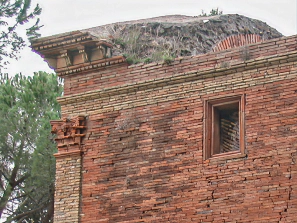

Connue pour ses innovations en termes d’aéronautique, Toulouse fait partie d’une des grandes communes de France avec presque 500 000 habitants. Mais pourquoi on en entend souvent parler ?
Quand on entend Toulouse on se demande parfois pourquoi on la surnomme la Ville Rose ? Faisons un peu d’histoire ! Au temps des romains, ils s'installent à Toulouse et utilisent une brique assez spéciale qui donnait cette couleur un peu rose puis au fil des siècles, Toulouse à voulu construire des bâtiments en utilisant du coup la brique romaine.
On oublie le fait que Toulouse à un campus qui existe et se base principalement sur la lutte contre le cancer, l’Oncopole. Cela rassemble centres de soins, industries pharmaceutiques comme Sanofi mais encore laboratoires de recherches. Leur but est d’appliquer des nouvelles techniques pour trouver un remède contre le cancer. Une des techniques, la "protonthérapie", consiste à mieux cibler les tumeurs en gardant les tissus sains des patients. Cependant, cela nécessite une très haute précision ! Au niveau de la cancérologie c’est bientôt l'un des leaders européen.
On innove souvent à Toulouse mais un bâtiment est réservé pour ça, le B612 le Centre d’innovation de Toulouse Aerospace. Le nom fait bien évidemment référence au livre emblématique de Antoine de Saint-Exupéry Le petit prince paru en 1943. Pour eux, cela permet de renforcer les innovations entre les laboratoires publics et privés. Ceci notamment dans le domaine de l’aéronautique voir de l’espace. Étant financé par l'Union Européenne et étant engagée de la Région Occitanie - Midi Pyrénées avec le FEDER (Fonds européen de développement régional), il essaye d'accueillir des acteurs de la recherche et développement technologique dans le domaine de l'aéronautique. Après avoir vu les innovations technologiques dans l'aéronautique, nous allons nous diriger vers un chef d'œuvre futuriste mais aussi technologique.